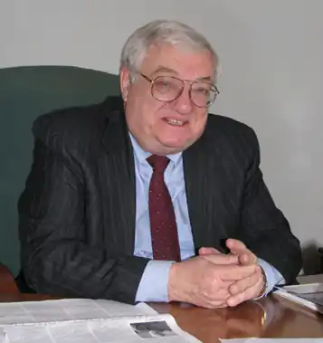
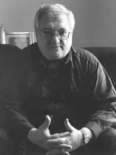

Щербак Юрій Миколайович (нар.12 жовтня 1934 р.) Український радянський письменник, сценарист, епідеміолог, публіцист, політик, автор близько 100 наукових робіт і двох десятків книг.
Народився в Києві, під час Великої вітчизняної війни був евакуйований до Росії, звідки на початку березня 1944-го повернувся в рідне місто, а в 1958 році закінчив Київський медичний інститут за фахом "санітарний лікар". Володіє польською і англійською мовами.
Доктор медичних наук. Академік УЕАН. З січня 1999 р. – державний службовець 3-го рангу. Одружений, має дочку і сина. Літературну діяльність Юрій Щербак почав в середині 1950-х років як активний член літературного об'єднання свого інституту. У студентській газеті "За медичні кадри" він пише перші розповіді, публікує сатиричні "мальовані рецензії". Перша повість "Як на війні" (1966) розповідає про будні радянських медиків, а перші свої розповіді, опубліковані в журналі "Юність", навіть оформляє власними малюнками. З 1966 – член Союзу письменників України (у 1987-1991 рр. – секретар правління), з 1971 року – Союзу кінематографістів України. У 1975 році в Харківському академічному театрі ім. А. Пушкіна п'єсою "Відкриття" він дебютував як драматург. Чудово володіючи польською мовою, Юрій Щербак переводив поезію польських авторів, неодноразово читав студентам Варшавського університету лекції. Велику частину його твору можна віднести до умовного жанру "міської прози". Він автор роману про проблеми трансплантації серця "Бар'єр несумісності", документального роману "Причини і наслідки" про боротьбу зі сказом, повістей, збірок новел і віршів і п'єс, а також ряду кіносценаріїв художніх, науково-публіцистичних, і документальних фільмів. Твори Юрія Щербака перекладалися мовами народів колишнього СРСР і видавалися на території соціалістичних країн. За збірку новел "Світлі танці минулого" удостоєний літературної премії Юрія Яновського (1984), за кіносценарій фільму "Державне відношення" – премії імені Олександра Довженко. Як публіцист Ю. Щербак отримав популярність своїми статтями про Чорнобильську трагедію, що публікувалися в українській та московській пресі. Після розпаду СРСР та отримання Україною незалежності він відійшов від літературної творчості і зайнявся політикою. У 1998 році Інститут українських студій Гарвардського університету видав політико-публіцистичну книгу Щербака "Стратегічна роль України" (The Strategic Role of Ukraine) англійською мовою, а в 2003 році вийшла його публіцистична книга "Україна: виклик і вибір (Перспективи України в глобалізованому світі ХХ сторіччя)".